Televisión
Capadocia · HBO
La Fea Más Bella · Televisa
Alma de Hierro · Televisa
Apuesta por un Amor · Televisa
Mujer de Madera · Televisa
Amy, La Niña de la Mochila Azul · Televisa
Corazones al Límite · Televisa
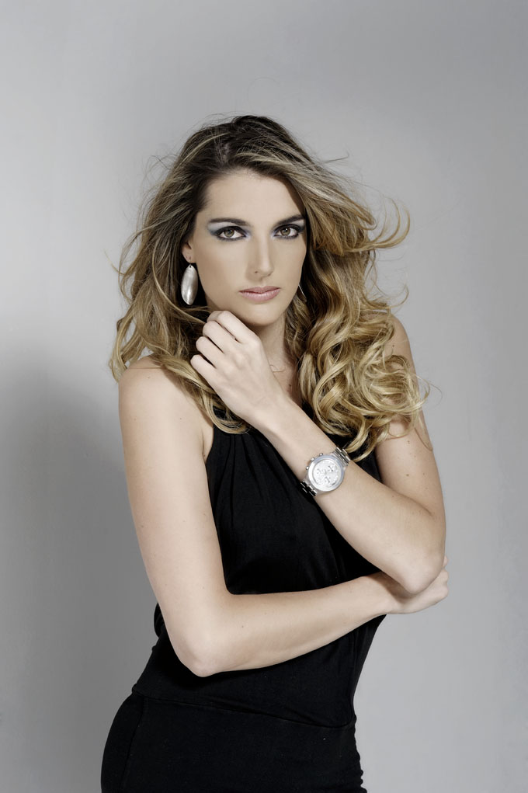
ACTRIZ · MODELO · PRESENTADORA
Teatro · Televisión · Cine · Publicidad · Medios
Ver portafolio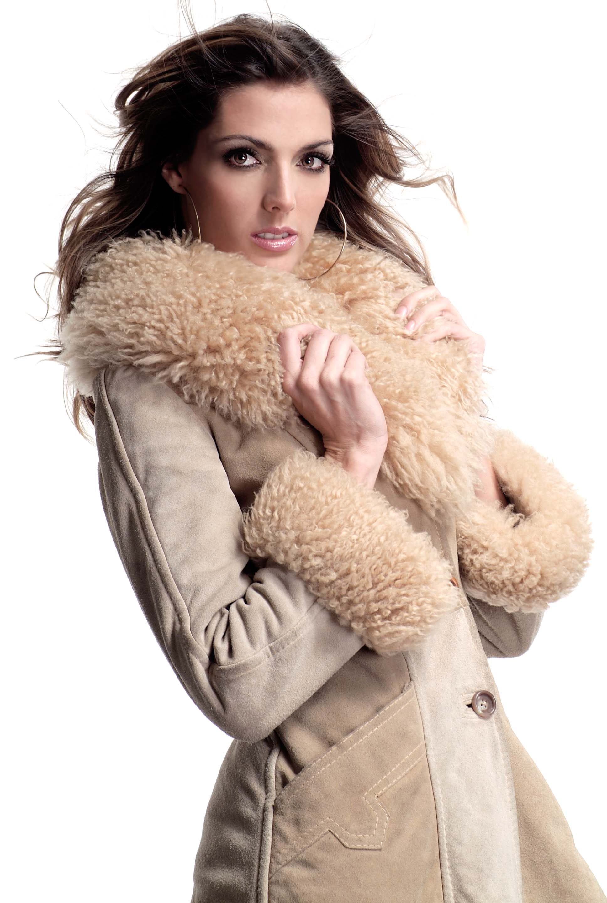
Isabel Molina es una de las nuevas caras de Ecuador, que trae consigo un aire de energía, buena vibra, brillo y profesionalismo a todos sus proyectos. Para esta actriz, modelo y presentadora, su profesión es una pasión, para la cual se prepara y se expone diariamente con su público y en diversas obras para estar siempre expuesta su arte.
Isabel nace en Treveris, Alemania de padre ecuatoriano y madre alemana, y aunque es un mezcla física de las dos culturas, con su estatura de 1 metro 74, su corazón es latino.
A pesar de su corta edad Isabel ya abarca con una larga carrera artística. Ella descubre su talento a la edad de 16 años y de inmediato se dedica a practicar su oficio. Sus primeras obras de adolescente son los musicales: “Jesucristo Superestrella”, “Hair” y “Evita”, todas en Quito Ecuador, donde participa en los coros, de solista y finalmente interpretando el papel de “Evita Perón”.
A partir de esto, Isabel toma esta carrera como la suya, estudia en la Universidad San Francisco una carrera de Ciencias de la Comunicación y Teatro (Quito), y eventualmente viaja a la ciudad de México D.F., donde avanza sus experiencias teatrales con talleres de cine, improvisación y clases de canto, estudia en el CEA, Centro de Educación Artística de Televisa (México D.F.) y cursa en Perfeccionamiento Actoral (México D.F.) bajo la tutela del Maestro Caballero en Argos.
Su experiencia artística esta comprendida de casi todas las ramas del espectáculo mundial: Teatro, Musicales, Televisión, Cine, Radio, Internet y Publicidad. En Teatro, sus logros mas especiales son “El Avaro de Moliere” (México D.F) y “Pic-Nic” de William Inge (México D.F). En televisión, fue parte de “Capadocia” de HBO y trabajo para Televisa S.A. donde obtuvo una variedad de papeles interpretando para telenovelas como “La Fea Más Bella”, “Alma de Hierro”, “Apuesta por un Amor”, “Mujer de Madera”, “Amy”, “La Niña de la Mochila Azul”, “Corazones al Límite” entre otros. En Cine, participo con su arte en cortometraje como “Consecuencias” de la Universidad Iberoamericana y “Prueba de Vida” de Castle Rock Entertainment como asistente de producción.
A trabajado en todo clase de publicidad digital e impresa y muchas de sus producciones siguen al aire, por ejemplo Allstate USA, BIESS, Nestlé y muchos mas. Ella vive ahora en Quito, Ecuador y trabaja El Club De la Mañana de RTS, después de un corto periodo en el Noticiero de Canal UNO.
Isabel Molina se sigue destacando por sus proyectos como su trabajo en su blog para madres QuitoBebés.com, sus obras y se sigue abriendo campo en el escenario artístico mundial y en lo personal como madre de un pequeño.
Capadocia · HBO
La Fea Más Bella · Televisa
Alma de Hierro · Televisa
Apuesta por un Amor · Televisa
Mujer de Madera · Televisa
Amy, La Niña de la Mochila Azul · Televisa
Corazones al Límite · Televisa
El Avaro de Moliere · México D.F.
Pic-Nic de William Inge · México D.F.
Jesucristo Superestrella · Quito
Hair · Quito
Evita · Quito · Evita Perón
Consecuencias · Universidad Iberoamericana
Prueba de Vida · Castle Rock Entertainment · Asistente de producción
El Club de la Mañana · RTS
Noticiero Canal UNO
Sony Fútbol
Selección de fotografías originales recuperadas del archivo profesional de Isabel Molina.
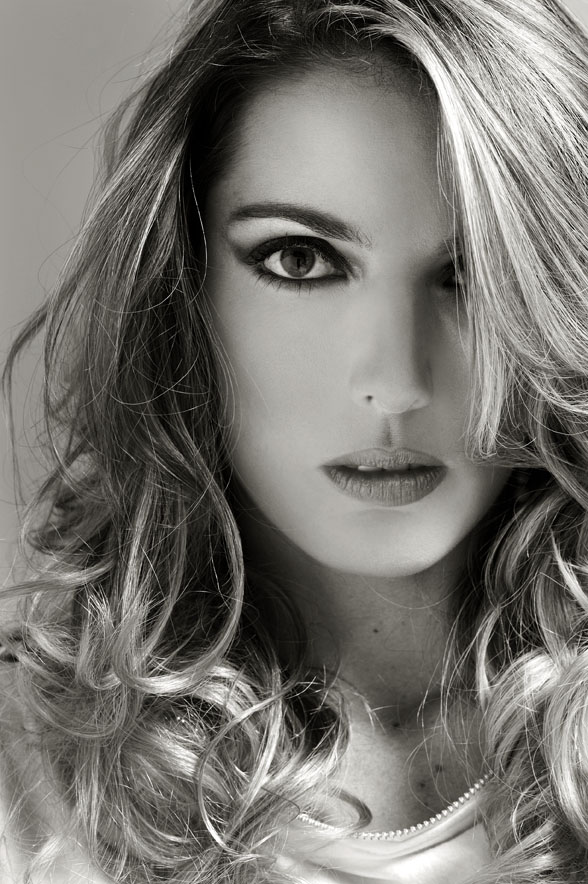
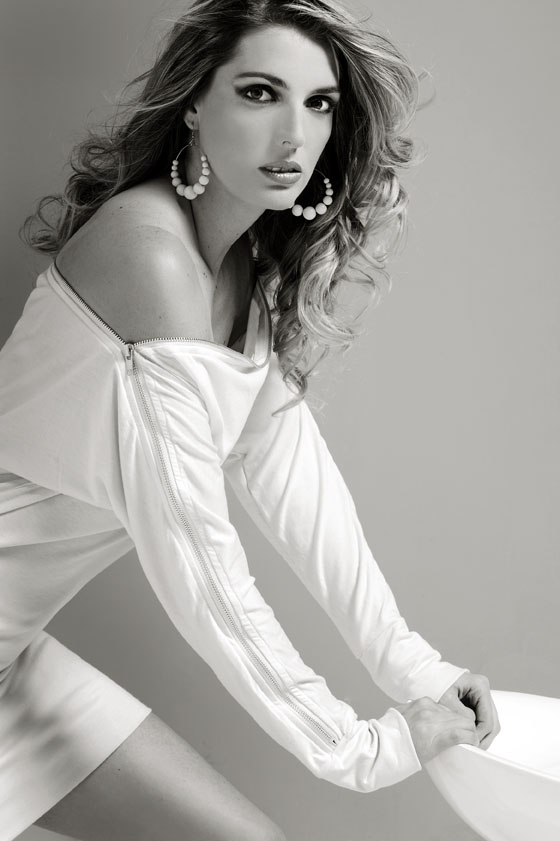
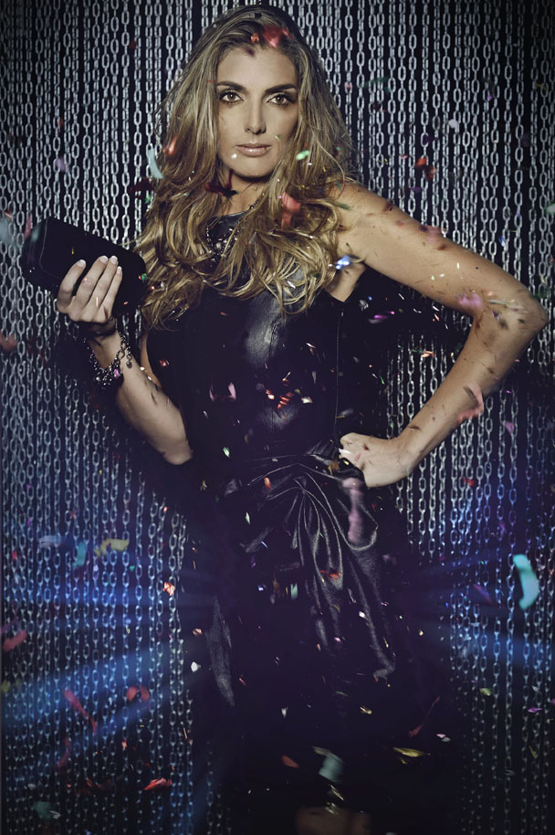
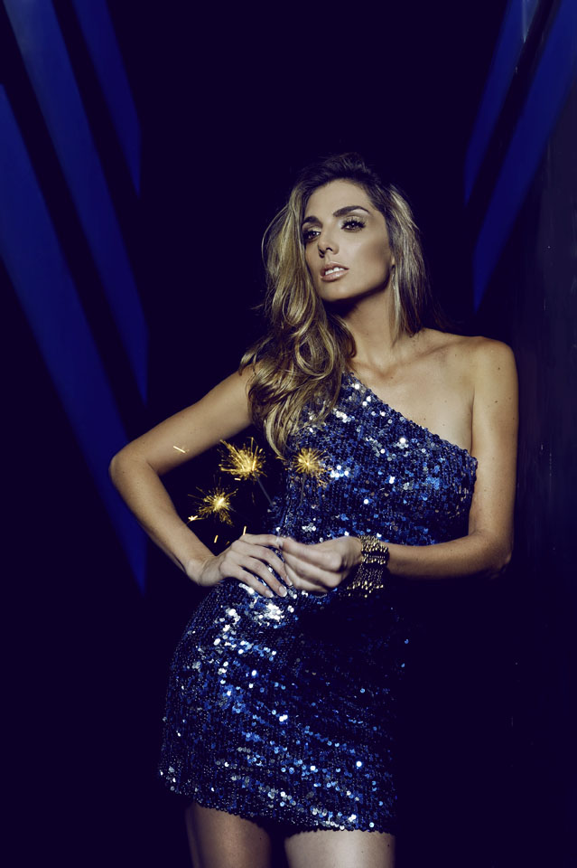
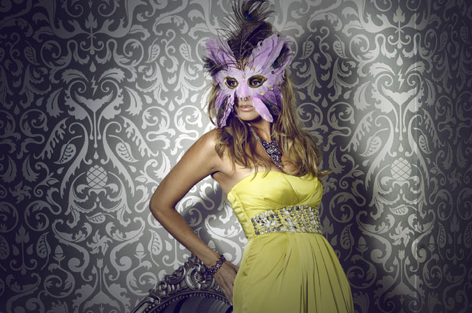
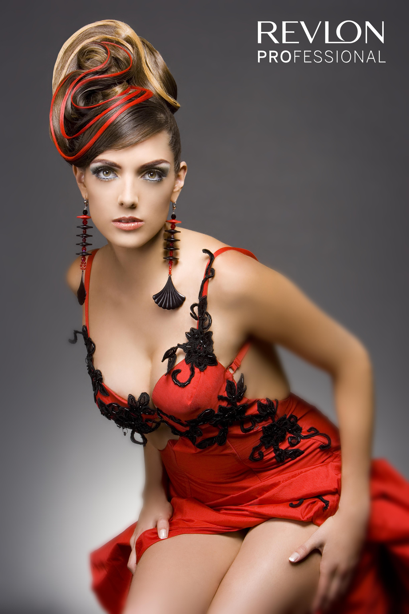
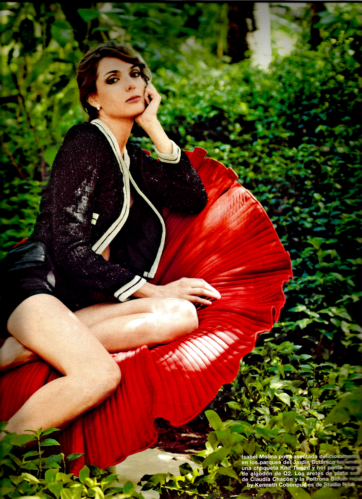
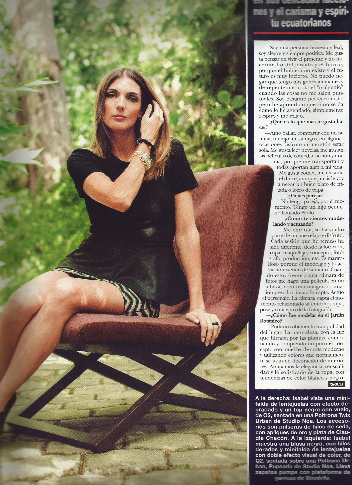
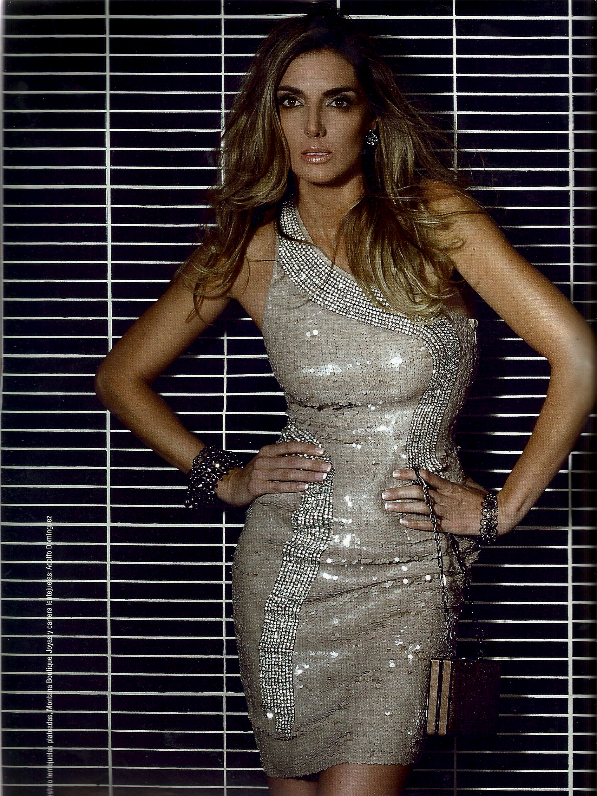
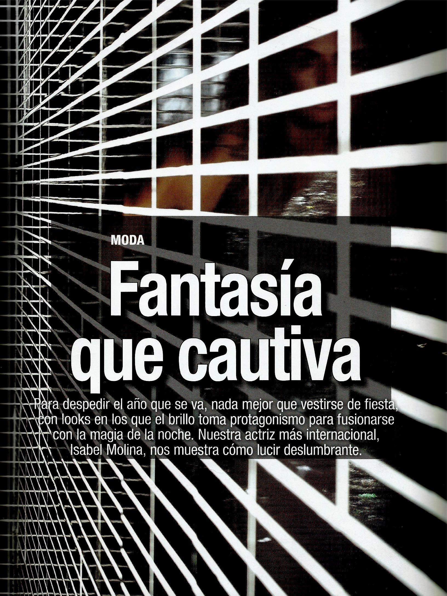
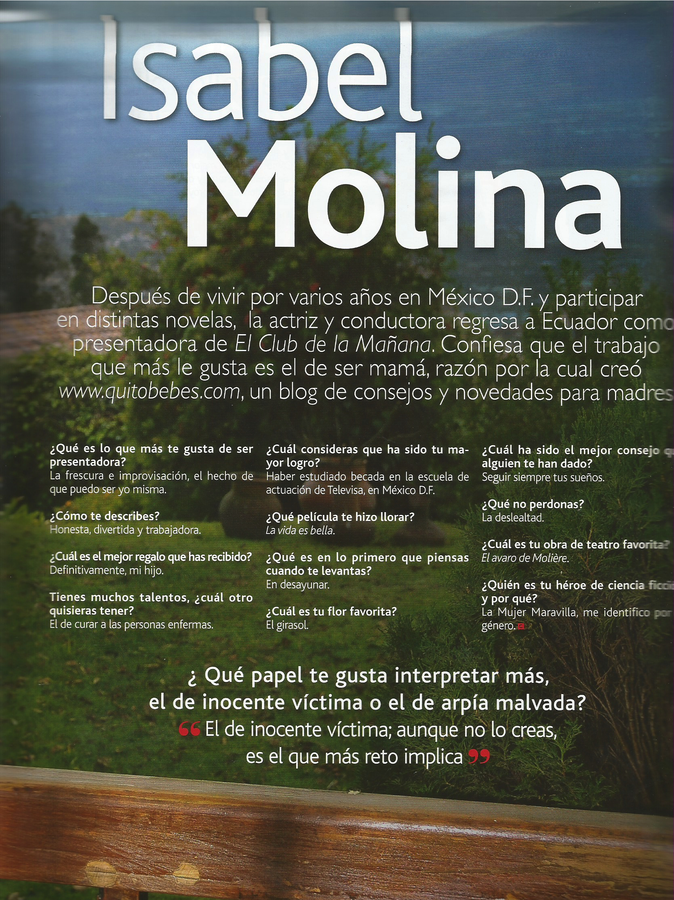
Publicidad digital e impresa: Allstate USA, BIESS, Nestlé y otras producciones.
SELECCIÓN ORIGINAL DEL SITIO
México D.F. · 2008 · con el maestro José Solé.
México D.F.
Producción audiovisual.
Ecuador.
Selección profesional.
CASTING · DIRECCIÓN · PRODUCCIÓN
Para propuestas profesionales, castings, televisión, cine, publicidad y presentación.
Añade aquí el correo, teléfono, representante y redes profesionales antes de publicar.
Volver al inicio